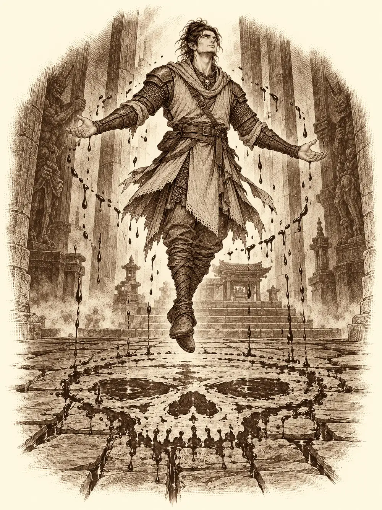

Capítulo 69
Sueños en llamas
Libro V · Los guardianes del Norte y del Sur
Las tres cajas fuertes seguían en mitad de la base, grandes como arcones y cerradas a cal y canto. Nadie las había abierto. Shigeru lo había intentado unas cuantas veces, siempre asegurándose antes de que Aka no estuviera por allí, y no había conseguido nada salvo despellejarse los dedos. Al final había vuelto a sus notas sobre muros, que leía tan despacio que tardaba una tarde en pasar una página.
El shogunato sabía que Katari y Ermitaño se habían metido sin permiso en una casa de inversiones protegida por el propio shogun, y que los guardias habían tenido que sacarlos a la calle. No sabía nada de las cajas. Pero con lo otro bastaba: lo más probable era que hubiera juicio por allanamiento. Ermitaño andaba buscando a Guxi para que le hiciera de abogado.
Aka llegó aquella tarde a la base con los ojos hundidos. Llevaba semanas escoltando caravanas de provisiones hacia el sur, donde el shogunato estaba levantando su asentamiento, haciendo guardias de noche y caminando de día, y el cansancio se le había ido acumulando en los hombros. Traía además una noticia que no sabía muy bien cómo llevar: por todo aquel trabajo la habían nombrado guardia del mes. Se le notaba orgullosa y avergonzada a la vez.
Entró, vio las cajas y se quedó quieta.
"Me pregunto quién habrá sido la mente maestra de esto. Porque esto es un juicio de los gordos".
Katari llevaba días sin dormir en la base. Se había ido al bosque, al norte, donde había árboles y no tierra árida, y se había pasado el tiempo meditando, hablando con los espíritus, visitando de vez en cuando el mundo de los sueños; cualquier cosa con tal de no pensar en lo que había pasado. Cuando vio llegar a Aka se le acercó y le pidió en voz baja hablar un momento a solas.
Shigeru hizo ademán de salir para darles intimidad.
"Quieto ahí", le dijo Aka, sin levantar mucho la voz. "Hasta que esto se aclare, nadie sale sin mi supervisión".
Y se volvió hacia Katari con una ceja levantada y una gota de sudor bajándole por la sien.
Katari se lo contó a su manera. Que habían oído en el pueblo que aquella casa de inversiones estaba estafando a mucha gente, aunque estuviera bajo la protección del shogun. Que habían ido a investigar. Que a ella la habían dejado pasar, y a Shigeru, y a un compañero nuevo que no sabía ni cómo había entrado. Que a Ermitaño lo descubrieron disfrazado y llamaron a la guardia, y que ella intentó explicar que estaban allí para ayudar y no la entendieron. Que en los papeles no había entendido nada, pero que un compañero tenía un libro de cuentas que parecía falseado.
"Os prohibieron volver a entrar".
"Quedaban compañeros dentro. He venido aquí a proteger a la gente. No podía dejarlos allí. Si de verdad había una estafa, podían estar en peligro. Entré lo justo para sacarlos".
Dijo que había visto salir a compañeros con unas cajas pequeñas, y que aquellas cajas grandes se les parecían pero ni por asomo tenían el mismo tamaño, así que no sabía qué había pasado ahí.
Aka anotó algo. Le preguntó nombres y Katari no supo darle ninguno.
"Volver a entrar cuando os han dicho que no es un agravante".
"Lo sé. Pero quería que lo supieras por mí".
Aka asintió despacio. Le dijo que hablara con Guxi, que él entendía de papeles mejor que ninguno de los dos, que revisaran juntos ese libro, y que si había juicio ella hablaría de su buena fe. Luego Katari sacó una bolsa y se la puso en las manos. Eran regalos, por el torneo. Aka se puso colorada. No estaba acostumbrada a que le regalaran cosas.
Mientras tanto, Shigeru se había acercado a la mesa del fondo, donde una muchacha jugaba con la llama de una vela. Era Blaze, la piromante que habían traído de Hakara, la más joven de los cazadores. Era temperamental, ingenua y le gustaba quemar cosas, pero tenía buen fondo y se hacía querer.
"¿Y tú quién eres? No te había visto nunca por aquí".
"Me llamo Blaze. Soy la mejor maga de fuego de todo el continente".
Shigeru bajó la voz y señaló con la cabeza las cajas fuertes.
"Oye, ¿tú podrías fundir eso? Sin hacer ruido".
Blaze miró las cajas, miró a Aka, que seguía al otro lado de la sala, y negó con la cabeza. Ahora no. Shigeru no insistió.
Le preguntó cómo había llegado allí.
"Te vas a reír. No lo sé. Estaba en otro sitio, no aquí, y de repente aparecí en este. Una gente que parecía maja me echó una mano y luego resultó que eran malos. Me lo explicó un drow muy majo".
Le contó que tenía catorce años. Que venía de una ciudad que se llamaba como ella; o más bien al revés, porque ella no tenía nombre y se lo habían puesto por la ciudad. Quería escribirle una carta a su maestro y no sabía por dónde empezar. A Shigeru se le ocurrió que él también debería escribir a su familia, que hacía mucho que no sabía de ellos. Blaze le prestó la pluma.
El monje escribía como quien levanta piedras. Las letras grandes le salían bien; las pequeñas, no tanto. Se salía de la hoja. Blaze encendía una llamita en la punta del dedo y se la acercaba a la mano cada vez que lo hacía. Así se lo habían enseñado a ella. Al final la carta para su padre quedó llena de faltas y de manchas, pero se leía, y cualquiera que la viera sabría que era de Shigeru.
De la habitación de Sirth llegó un quejido. Luego otro, más largo.
Katari fue la primera en levantarse. Llamó con los nudillos y nadie contestó. Abrió.
Sirth estaba en la cama dando vueltas, empapado en sudor. Katari lo zarandeó con suavidad y no despertó. En algún momento le agarró el brazo y se lo apretó con fuerza, como si intentara aferrarse a algo. Seguía dormido, en un sueño muy profundo del que no había manera de sacarlo.
"Puede que haya algo afectándole el sueño", dijo Katari. "Hay seres que viven en los sueños".
Aka, que la había seguido hasta la puerta, no lo entendió.
"Te lo explico yendo".
Mandó a Aka a buscar a Shigeru y a Blaze. Se sentó junto a la cama, cerró los ojos y empezó a meditar.
La habitación empezó a deshacerse. Los colores se fueron, las paredes cambiaron de forma, y de pronto estaban en un templo. Las piedras eran grises, oscuras, con vetas rojas, y por el suelo corrían pequeños ríos de sangre entre las losas. Había un silencio absoluto. A unos veinte pasos, en el centro de un círculo, flotaba Sirth con los brazos abiertos en cruz y los ojos vueltos hacia arriba, en blanco. A su alrededor, en el suelo, empezaron a formarse gotas rojas, una detrás de otra, haciendo un círculo, y en el centro empezó a dibujarse una calavera enorme.
Katari avanzó.
Delante de ella, de la oscuridad del techo o de ninguna parte, se formó algo. No llegó a verlo entero. Solo oyó la voz.
"Fuera. Es mío".
Algo la golpeó por dentro de la cabeza, algo que la superaba de un modo que no había sentido jamás. Salió despedida hacia atrás y chocó contra sus compañeros. El mundo de los sueños se sacudió. Durante un instante vieron muchos sueños a la vez, mezclados unos con otros: un Shigeru joven ayudando en su aldea, una niña rodeada de llamas que se reía, Guxi soñando algo en algún sitio.

Después todo volvió a recomponerse. Y ya no estaban en el templo.
Era un campo de batalla. Estaba arrasado. Había árboles quemados, fuego en todas direcciones y cuerpos tendidos por el suelo. A Katari le dolía la cabeza como si se la hubieran partido. Shigeru le preguntó si estaba bien. Estaba allí con él y con Blaze. Aka no aparecía por ninguna parte.
Blaze y Shigeru oyeron un llanto. Venía de detrás de un árbol. Katari soltó un águila de espíritu para que fuera a mirar. El ave volvió y le contó que allí había una niña pequeña, escondida.
Le pidió que se acercara despacio, como un animal manso. La niña la espantó con la mano. Estaba hecha un ovillo, abrazada a las rodillas, con un casco tan grande que le tapaba casi los ojos y un palo en la mano. Tenía la cara sucia de llorar.
Se acercaron los tres y la reconocieron a la vez. Era Aka. Aka de niña.
"Tú no eres mi abuelo. ¿Dónde está mi abuelo?".
"Aka", le dijo Katari, con mucho tacto.
"¿Y tú cómo sabes mi nombre? ¿Me has estado espiando?".
Le apuntó con el palo como si fuera una espada. Katari se sentó a su lado, hombro con hombro.
"¿Has perdido a tu abuelo? ¿Sabes dónde está?".
La niña se levantó el casco un poco para mirarla, con miedo.
"Mi abuelo dice que nunca me va a pasar nada. Que él siempre está ahí para protegerme".
"Te queremos llevar con él. Para que estés protegida".
"Vale. Pero os estoy vigilando".
No le dio la mano. Echó a andar delante de ellos, rígida, con el palo en alto, imitando a un guardia. Katari se puso al lado de Shigeru y le murmuró algo que la niña no oyó: que tanto de pequeña como de mayor, aquella cría sudaba igual.
A lo lejos sonaba una espada golpeando algo que no gritaba. El águila subió entre el humo, se perdió un momento y volvió a bajar quejándose, hablando sin parar dentro de la cabeza de Katari: que allí arriba no se veía nada, que por qué no le daba nunca las gracias, que había un señor allí abajo pegándose con algo. Un samurái anciano, con armadura de general, peleando solo contra cadáveres que ardían.
La niña lo oyó y echó a correr.
Shigeru la agarró para que no se lanzara al fuego. Y el abuelo, desde lejos, vio a un hombre extraño sujetando a su nieta. Tensó el arco y le disparó.
Shigeru recibió la flecha y siguió sujetando a la niña. De entre las llamas salían esqueletos, uno tras otro, ardiendo. El monje los rompía con la espada y con los puños y el fuego se le metía en la ropa. Blaze lanzó llamas contra ellos y no les hizo nada; las llamas les pasaban por encima como agua. Cambió a rayos, y los rayos sí funcionaron. A la pequeña Aka tampoco la quemaba el fuego. Las llamas la atravesaban y se apagaban al tocarla.
El abuelo seguía viéndolos como enemigos. Se volvió contra Shigeru con la espada y lo dejó tirado en el suelo, sin sentido. Katari llegó hasta él, le puso la mano en el pecho y lo trajo de vuelta. A su lado brotó el unicornio de luz, el tótem que hacía más fuertes todas sus curas, y los fue sosteniendo a todos. Luego se volvió hacia el anciano y le habló en celestial: que habían venido a ayudar, que no eran sus enemigos, que se iban a marchar.
Algo de lo que dijo hizo dudar al viejo.
Katari intentó también convertir a Blaze en un gorila gigante para que tuviera algo con que defenderse. La muchacha llegó a crecer, peluda y enorme, y un golpe le rompió la concentración a Katari antes de que pudiera dar un paso. Blaze volvió a ser Blaze.
La niña los miraba. Veía cómo curaban, cómo rompían esqueletos, cómo Shigeru volvía a levantarse para protegerla.
"Abuelo", dijo. "No sé yo".
"Vengo de parte de Kogan Dragon", dijo Katari en celestial.
Al anciano se le pusieron los ojos como platos. Soltó la espada.
"Pruébalo".
Katari llamó a su espíritu, y a su lado apareció un dragón dorado pequeño, una copia en miniatura del protector. El samurái lo miró con la boca abierta, hincó una rodilla en el suelo y agachó la cabeza. La niña lo miró y se arrodilló también, imitándolo, con el casco a punto de caérsele. El dragoncito se desvaneció.
"Has estado en su presencia", dijo el anciano. "Eres la enviada del dragón".
La niña le preguntó quién era ese. El abuelo le dijo que era el gran protector, el guardián que protege a los guardianes de Kuroto, y que a ella también la protegía. La abrazó. Y mientras la abrazaba, por encima de su cabeza, le habló a Katari en un celestial distinto, más complicado, deliberadamente enrevesado, como hablan los padres cuando no quieren que los niños se enteren. Ni Shigeru ni Blaze entendieron una palabra.
Le levantó un poco el kimono a la niña por la espalda. Tenía una marca. Parecían plumas.
"Ella es la enviada del Fénix. Debes protegerla. Debes hacer que se reúna con el Fénix. Prométemelo".
Entonces el anciano empezó a arder. No era el fuego de alrededor. Ardía desde dentro, empezando a difuminarse, y le gritó a Katari:
"¡Prométemelo!".
Katari agachó la cabeza.
"Te lo prometo con mi vida".
La niña se asustó. Preguntó a su abuelo si le pasaba algo. Él le apretó los mofletes con las manos, sonriendo como si todo estuviera bien.
"Todo estará bien. Tienes que buscarla a ella. A la enviada del dragón".
"Pero si está ahí, abuelo".
El abuelo sonrió una última vez y se deshizo en llamas delante de ella.
La niña empezó a buscarlo por todas partes, llorando, gritando su nombre. Las llamas crecieron a su alrededor hasta hacerse altas como montañas y los encerraron en un círculo. La pequeña Aka cayó de rodillas con las manos en la cabeza. A Katari empezó a arderle todo el cuerpo. Se juntó con los otros dos y volvió a concentrarse, a la desesperada, para salir de allí.
Cayeron en el suelo de la habitación de Sirth como si alguien los hubiera tirado. Estaban mareados, doloridos. Sirth seguía en la cama, dormido, revolviéndose. No se había despertado. Habían pasado dos minutos.
Shigeru se levantó tan deprisa como pudo y fue hasta Katari.
"Te debo la vida. Si necesitas cualquier cosa, estaré ahí. Para protegerte, si hace falta".
Katari le dio las gracias sin mirarlo y se sentó al lado de Sirth, sin saber qué hacer.
Blaze dijo que conocía a aquella cosa del templo. Había leído sobre ella en algún libro. Era el dios del asesinato. Nadie supo decir qué quería de Sirth, ni por qué lo tenía así. Katari decidió ir a la biblioteca a buscar todo lo que hubiera sobre él.
Aka se levantó despacio, apoyándose en una silla. Le estallaba la cabeza. Buscó algo, una palangana, lo que fuera, y vomitó como si llevara días enferma. No recordaba nada. O casi nada. Tenía calor, mucho calor, una angustia que se le acumulaba en la garganta y la certeza de que algo malo había pasado. No tenía estómago para cenar. Salió a dar un paseo para que le diera el aire.
Blaze y Shigeru se fueron a buscar algo de comer. Ella se ofreció a encender el fuego.
"He tenido bastante fuego por hoy", dijo Shigeru. "Voy a comer algo frío".
Katari le echó un último vistazo a Sirth antes de salir. Seguía en la cama, empapado, apretando las sábanas con los puños.